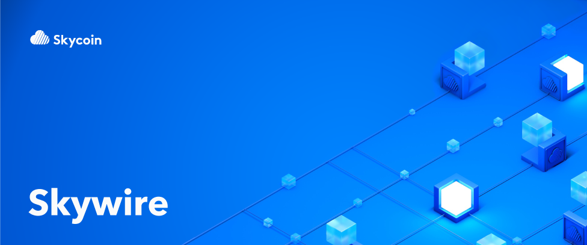

Весной 2017 года Федеральная Комиссия по Связи внесла предложение согласно которому интернет провайдерам дается разрешение на сбор и продажу информации о том, как их пользователи используют сеть интернет. Интернет провайдерам разрешено делать это без согласия пользователей. И у пользователей нет возможности запретить использование своих данных. Проще говоря, если вы клиент такой компании - это значит что вы платите за то что за вами следят.
Отслеживание пользователей, ненадежное покрытие, высокие цены, медленная и некачественная поддержка - причины по которым интернет провайдеры в Америке являются лидерами по жалобам в их сторону. Почему же тогда люди продолжают платить за шпионаж над собой?
Ответ печален, но предсказуем: пользователи чувствуют себя в западне. Кажется, что нет других альтернатив. Интернет провайдеры обладают монопольной силой, включая возможность непомерно завышать цены на услуги низкого качества. Ситуация усугубляется тем, что закон по Сетевому Нейтралитету может вообще не выйти в свет в 2018 году.
И поэтому мы построили Skywire: Интернет следующего поколения. Skywire возвращает контроль в руки пользователей, забирая его у интернет провайдеров. Со Skywire вы всегда знаете за что вы платите. Это самодостаточная сеть, 100% принадлежащая и поддерживаемая пользовательским сообществом.
Как же Skywire работает? Вы можете представить его, как интернет провайдер который расположен в сети, где каждый участник является и поставщиком и пользователем интернет услуг. Skywire использует блокчейн технологии для создания равноправного пользовательского рынка. Он быстр, конфиденциален и безопасен. И что самое лучшее - пользователь всегда стоит на первом месте.
Со Skywire вы получаете прибыль и приносите пользу напрямую через пользование сетью. Пользователи могут заработать токены сдавая в аренду неиспользуемые ресурсы своих компьютеров и тем самым обеспечивая сеть пропускной способностью и местом для хранения данных. Затем пользователи могут использовать токены на использование ресурсов сети. Эта схема делает сеть Skywire самодостаточной и независимой: чем больше людей пользуются, тем она становиться надежнее. Skywire стимулирует использование сети за счет ее же использования.
Skywire создан пользователями для пользователей. В отличие от корпоративных сетей интернет провайдеров, в сети Skywire все решают пользователи. Функции сетевых узлов построены на принципе web-of-trust. Недобросовестные сетевые узлы могут быть выведены на основе общественного согласия - этим доверительные узлы усилятся еще больше. Web-of-trust консенсус делает Skywire невосприимчивым к атакам, эксплуатациям и манипуляциям. Это создает систему, где каждый имеет голос.
Skywire быстрее и безопаснее, чем другие интернет альтернативы. Передающиеся данные зашифрованы и приватны и это означает, что вы не можете быть отслеженны во время пользования сетью. Также, сеть не имеет искусственных ограничений по скорости и перерывов в работе в отличие от больших интернет провайдеров. Вместо того, чтобы платить $150 в месяц и быть отслеженным телекоммуникационными монополиями, пользователи Skywire получают интернет который защищает их безопасность.
Мы нуждаемся в Skywire сейчас больше, чем когда-либо. Неспособность Федеральной Комиссии по Связи продвигать Сетевой Нейтралитет означает, что большие интернет провайдеры будут и дальше сжимать хватку до того момента, когда они завладеют полным контролем над нашим выбором использования интернета. Цены будут расти. Ограничение скорости, цензура, и манипуляция может стать нормой. Пользователи будут иметь меньше контроля, чем когда-либо. Их личная информация будет использоваться, их индивидуальность будет продаваться и покупается корпорациями в поисках получения большей прибыли.
В наших силах, вернуть себе контроль. Skywire собирается защищать Сетевой Нейтралитет на уровне физических узлов сети, забирая контроль у интернет провайдеров и возвращая его в руки пользователей. Распределенная сеть Skywire на деле доказывает, что мы можем быть независимыми от интернет провайдеров. Вместе мы можем создать лучший интернет - Интернет следующего поколения. Сеть где каждый участник является полноправным владельцем. Сеть которая свободна, безопасна и доступна для каждого.